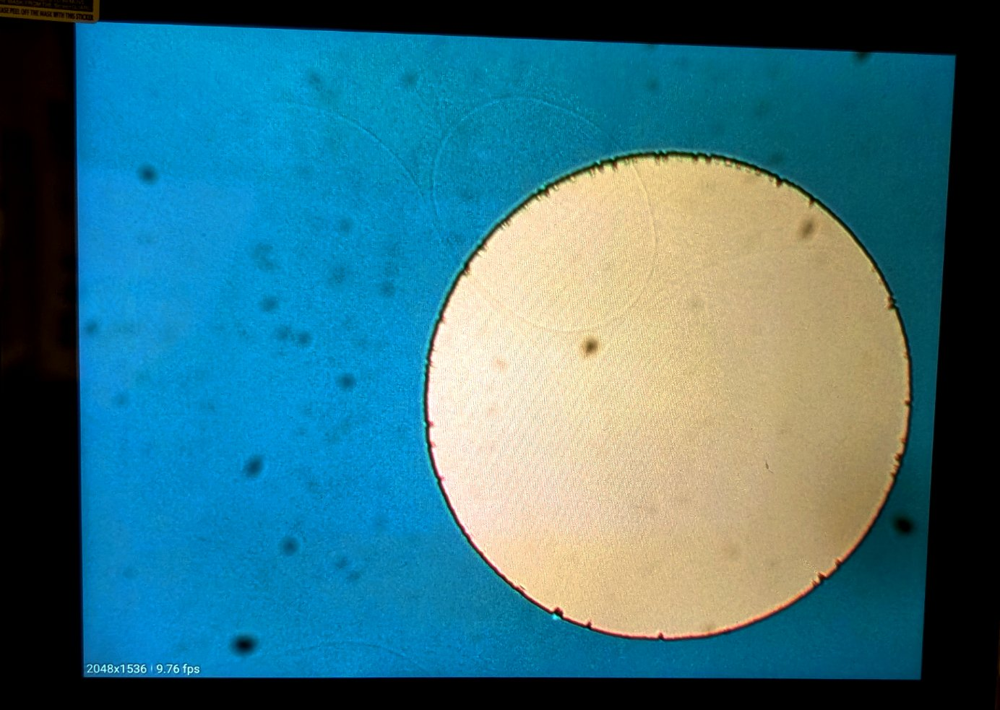

JUN 16, 2025
Summer Processing Lab: Week 3 (6/16)
This week marks the completion of the initial mask exposure for our MOSCAP manufacturing process. We further calibrated our exposure time based on observed results, experimental data collected online, and the measured radiance of our lamp.
D = b * D0 * (1 + R_eff*e^(-αT)) | Levinson, Harry J. Principles of Lithography, 4th Ed. Parameters: 60-80nm SiO2 ~ 70nm = 7 * 10^-8 4000rpm for 60 sec with AV1512 -> ~1.2 µm 2 minute post bake | b = 0.9, slightly increases solubility change - "Principles of Lithography" (H. J. Levinson, SPIE Press) absorption (α): ~0.45 D_0: 75 mJ/cm^2 based on experimental resolution falloff. Thompson, L. F., Willson, C. G., & Bowden, M. J. (1994). Introduction to microlithography. American Chemical Society.
Full Stack Reflectivity via Transfer Matrix Method:
Reff = ((r_12 + r_23 * e^(4i * pi * n_2 * d/λ)/(1 + r_12 * r_23 * e^(4i * pi * n_2 * d/λ))^2
n_1 = n_resist = 1.7
n_2 = n_SiO₂ = 1.46
n_3 = n_Si = |3.8 + 0.02i| ~ 3.80
Fresnel reflection coefficients:
r_12 = (n_1 - n_2)/(n_1 + n_2) = (1.7 - 1.46)/(1.7 + 1.46) = 0.07595
r_23 = (n_2 - n_3)/(n_2 + n_3) = (1.46 - 3.80)/(1.46 + 3.80) = -0.44487
Reff = ((0.07595 - 0.44487 * e^(4i * pi * 1.46 * 7 * 10^-8/400nm)/(1 - 0.07595 * 0.44487 * e^(4i * pi * 1.46 * 7 * 10^-8/400nm))^2
= (0.5198 + 0.0307i)/(1.0337 + 0.0023i))^2 = 0.2537
D = 0.9 * 75 mJ/cm^2 * (1 + 0.2537*e^(-0.55 * 10^6 * 1.2 * 10^-6))
D = 0.9 * 75 mJ/cm^2 * (1 + 0.2537*e^(-0.54))
D = 0.9 * 75 * (1.13112518) = 76.35095
t = 76.35095/E
76.35095/9.1 = ~8.4 sec
We observed significant interference fringes under the microscope after exposure, which may indicate the following issues: insufficient contact, residual moisture due to insufficient drying, photoresist edge beading.

Going forward, I would recommend an acetone swab along the outer edge before the post bake to remove excess photoresist in noncritical areas to improve exposure contact, to eliminate the risk of beading.